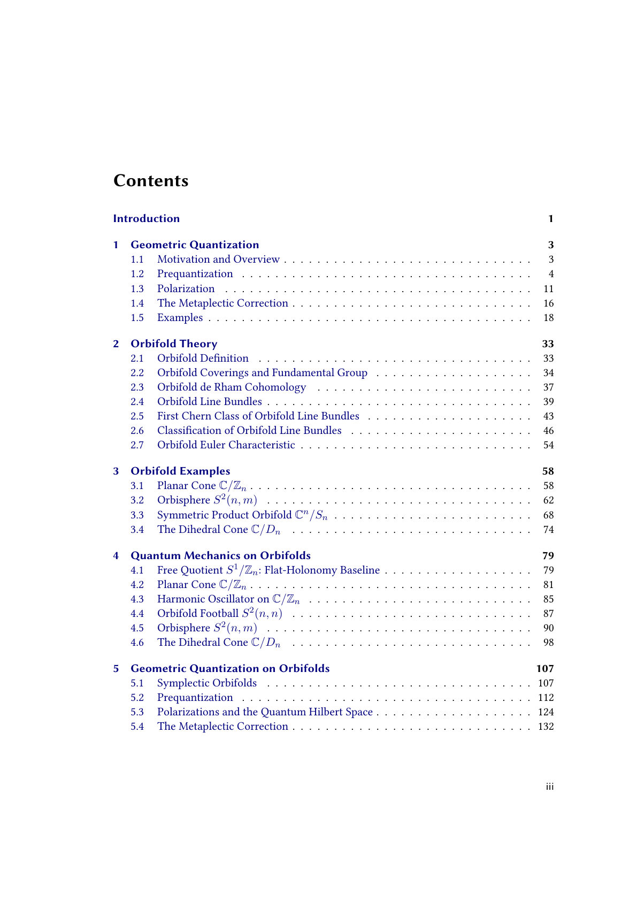
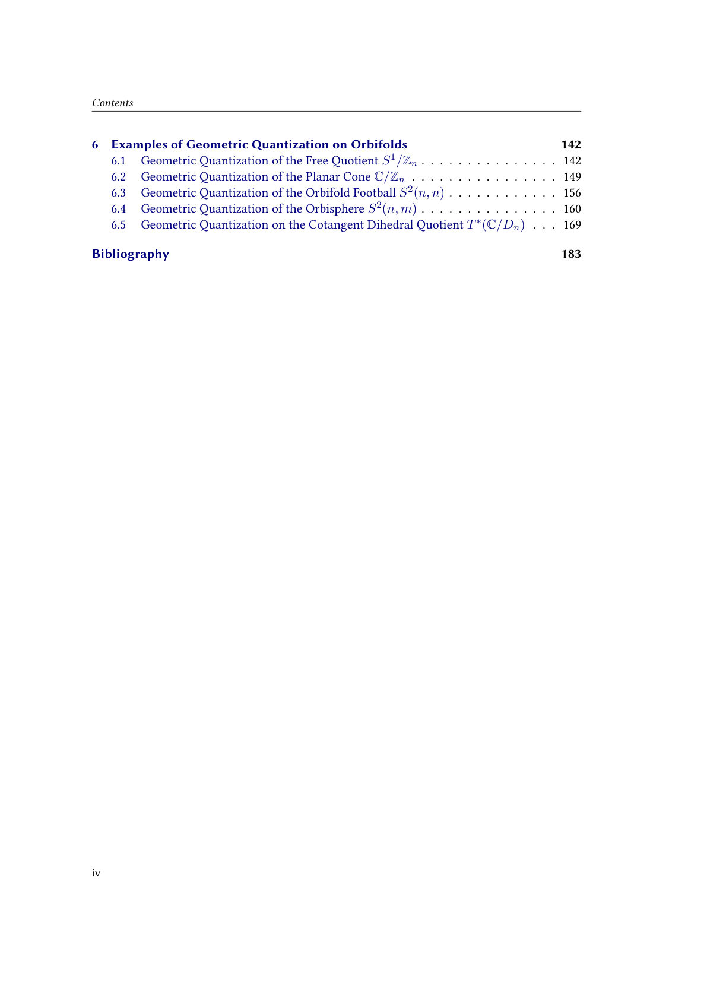
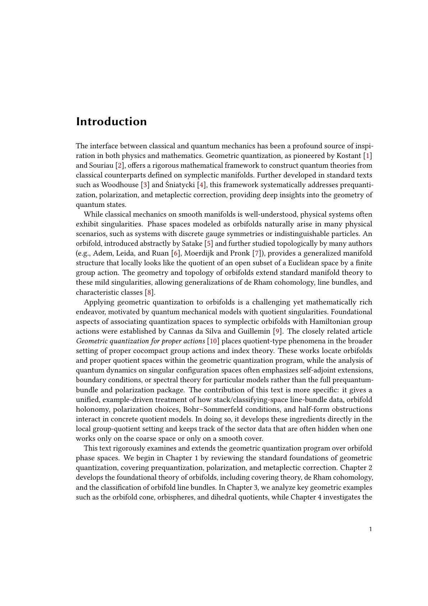
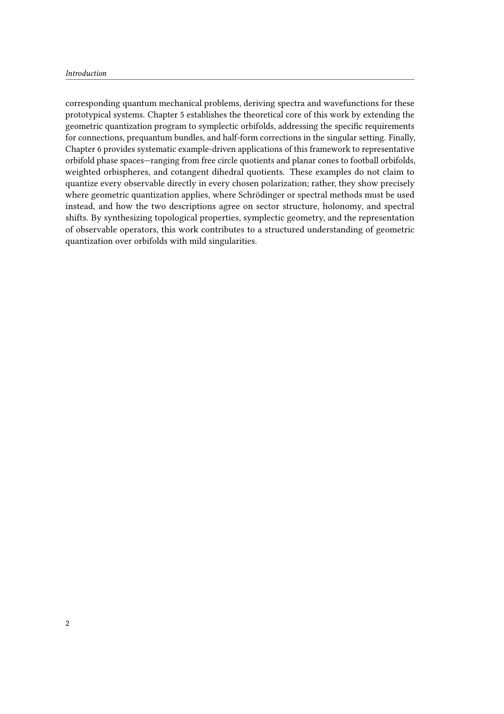
← Index · ← Previous · Next →
Authors: Zheng Zhang, Mingfang Shu, Mingtai Xie, Weizhen Zhuo, Yanzhen Cai, Christian Balz, Jianting Ji, Feng Jin, Jie Ma
Type: both · Category: strongly correlated electrons · PDF: https://arxiv.org/pdf/2605.24527v1
Analysis basis: full PDF text, analyzed in chunks
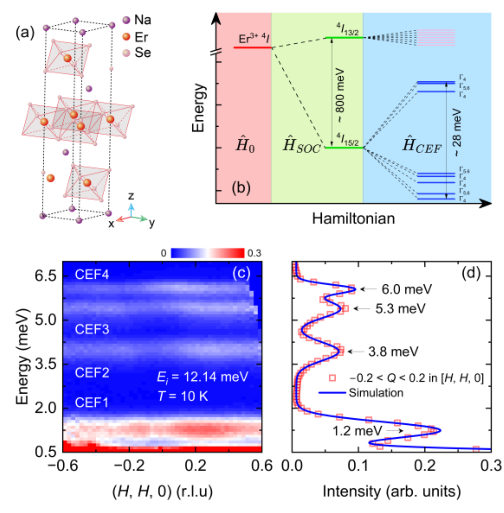
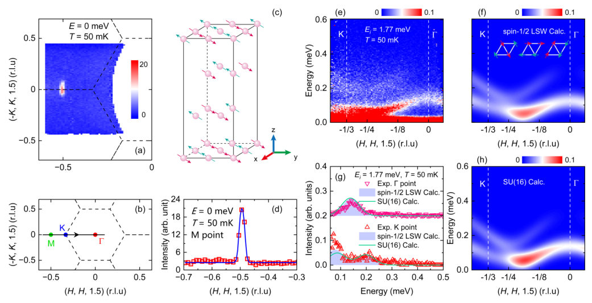
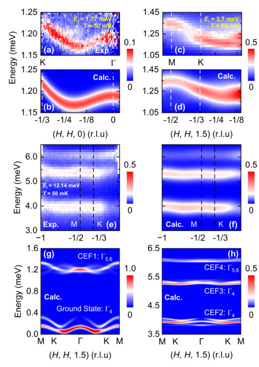
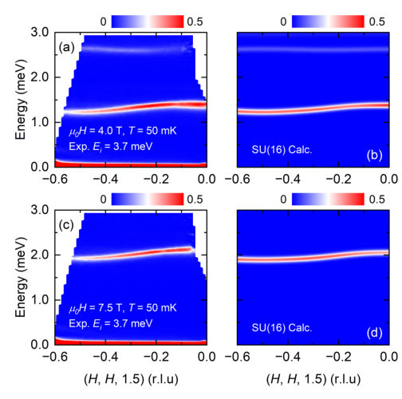
Summary. This paper demonstrates how the interaction between local crystal field levels and collective magnons in NaErSe2 gives rise to new, dispersive multipolar excitations. It shows that these excitations can be tuned using an external magnetic field to create a multipolar ferromagnetic state. This provides a new platform for studying complex, high-rank multipolar physics in frustrated magnets.
Why it may be interesting. not directly relevant
Main problem. The study aims to understand the coupling between local crystalline electric field (CEF) excitations and collective spin dynamics, specifically how this coupling leads to emergent dispersive multipolar excitations.
Main result. The researchers identified that the coupling between ground-state magnons and higher-lying dipole-octupole CEF states creates a distinct, symmetry-selected multipolar band, and demonstrated that magnetic fields can induce a transition to a multipolar ferromagnet.
Method. The work combines inelastic neutron scattering (INS) and Raman spectroscopy with theoretical modeling using the J = 15/2 manifold approach, Linear Spin Wave theory, and SU(N) coherent state simulations.
Model / system. The system is NaErSe2, a triangular-lattice antiferromagnet containing Er3+ ions with a 4f11 configuration. The model uses a total angular momentum J = 15/2 Hamiltonian including both CEF terms and anisotropic exchange interactions.
Key observables. Inelastic neutron scattering spectra, magnetic Bragg peaks, CEF energy levels, and magnetization/specific heat measurements.
Important parameters / regimes. CEF splittings (e.g., 1.2, 3.8, 5.3, and 6.0 meV), exchange parameters (Jzz, Jplus, Jplusplus, Jzplus), and magnetic field strengths up to 7.5 T.
Assumptions / limitations. The analysis assumes the validity of the J = 15/2 manifold approach and uses the D3d symmetry of the Er3+ environment to classify the CEF levels.
Figures summary. The figures likely display neutron scattering intensity maps (constant-energy cuts), spin-wave dispersions, CEF energy levels, and the evolution of the spectra under applied magnetic fields.
Paper structure. The paper introduces the problem of local-collective coupling, describes the experimental setup and material properties, presents the identification of CEF levels and magnetic order, details the discovery of dispersive multipolar modes, and concludes with the effects of high magnetic fields.
In most condensed-matter systems, local and collective excitations remain decoupled due to their distinct energy scales. Here, we identify coupled local-collective excitations in the triangular antiferromagnet NaErSe$_2$ by combining neutron spectroscopy with total angular momentum modeling. The low-lying crystalline electric field (CEF) doublets include a dipolar $Γ_4$ ground state forming stripe-$x$ order and a $Γ_{5,6}$ excited state with dipole-octupole character. High-resolution spectra reveal emergent symmetry-selected dispersions, where magnon branches from the ground state are replicated on higher $Γ_4$ levels but couple with the $Γ_{5,6}$ levels to form a distinct multipolar band. An applied magnetic field reconstructs the CEF wavefunctions and polarizes the system into a multipolar ferromagnet, further reshaping the spectra. This study demonstrates the emergent coupling of local and collective excitations driven by strong spin-orbit coupling and establishes NaErSe$_2$ as a platform for field-tunable multipolar excitations in frustrated magnets.
Authors: Qiyuan Shi, Ming Li, Youjin Deng
Type: theory · Category: statistical mechanics · PDF: https://arxiv.org/pdf/2605.25812v1
Analysis basis: full PDF text, analyzed in chunks
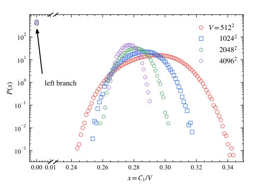
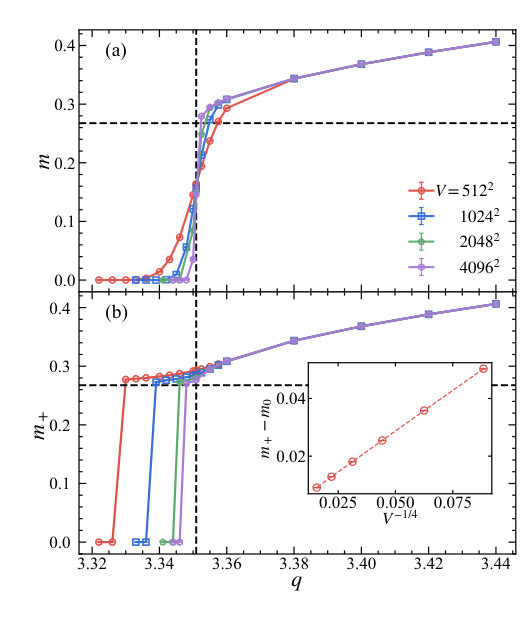
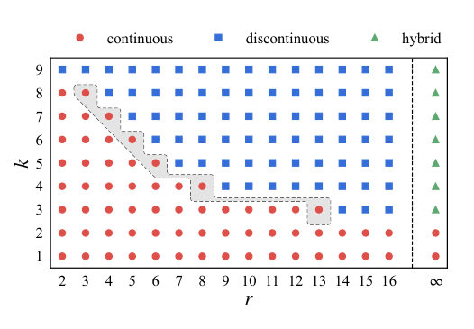
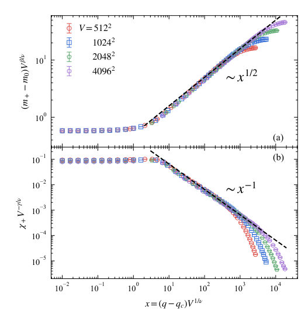
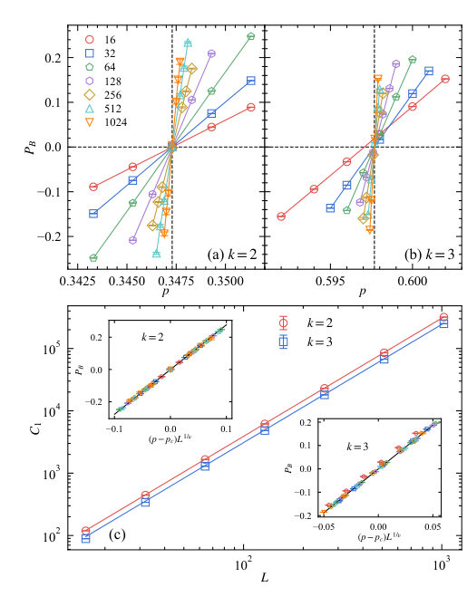
Summary. This paper demonstrates that the hybrid phase transition characteristic of infinite-dimensional k-core percolation does not exist in two dimensions. Instead, the system undergoes either a standard 2D percolation transition or a first-order transition driven by a nucleation mechanism. This reveals how geometric constraints in finite dimensions fundamentally alter the nature of phase transitions compared to mean-field predictions.
Why it may be interesting. not directly relevant
Main problem. The study investigates the nature of the phase transition in 2D k-core percolation as the interaction range r varies, specifically determining if the hybrid transition seen in infinite dimensions persists in 2D.
Main result. The authors find that no hybrid transition exists in 2D; instead, the phase diagram contains only continuous (2D percolation universality) and first-order regimes, with the latter driven by a nucleation mechanism.
Method. Large-scale numerical Monte Carlo simulations on triangular lattices using recursive pruning and a fast sampling algorithm, combined with finite-size scaling analysis.
Model / system. An equivalent-neighbor k-core percolation model on a 2D triangular lattice where a site remains active if it has at least k neighbors within a Euclidean distance r.
Key observables. Order parameter (fraction of sites in the k-core), susceptibility, critical polynomial (wrapping probability difference), and fractal dimension.
Important parameters / regimes. Core index k, interaction range r, occupation probability p, and system size L.
Assumptions / limitations. The study focuses on 2D triangular lattices and assumes the behavior is representative of the 2D regime, noting that the results for k-core percolation are sensitive to spatial dimension.
Figures summary. Figures show the phase diagram in the (k, r) plane, the bimodal distribution of the order parameter in the first-order regime, and the logarithmic finite-size scaling of the pseudocritical point.
Paper structure. The paper introduces the k-core problem and the mean-field limit, describes the numerical simulation methodology and sampling algorithms, presents the constructed phase diagram, analyzes the nature of the transitions (continuous vs. first-order), and discusses the renormalization-flow implications.
We perform large-scale numerical simulations to investigate the critical behavior of $k$-core percolation in two dimensions with an extended interaction range $r$. By systematically varying both the core index $k$ and the interaction range $r$, we construct a comprehensive phase diagram in the $(k,r)$ plane. In contrast to $k$-core percolation in infinite dimensions, no hybrid transition is observed in two dimensions: the phase diagram contains only a continuous transition regime and a strictly first-order regime, separated by a tricritical or critical-end point $(k_s,r_s)$. For $k
Authors: Zixin Jessie Chen, Zhuo Chen, Archer Wang, Jeff Gore, William T. Freeman, Congyue Deng, Marin Soljačić
Type: theory · Category: disordered systems and neural networks · PDF: https://arxiv.org/pdf/2605.26032v1
Analysis basis: full PDF text, analyzed in chunks
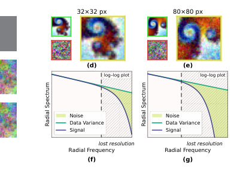
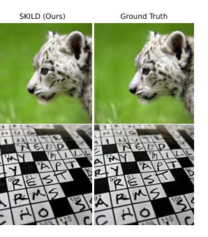
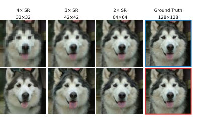
Summary. The authors introduce SKILD, a diffusion model that treats scale as an explicit coordinate by manipulating image content in frequency space. This allows a single model to perform both image generation and continuous super-resolution without task-specific architectures. The model's ability to preserve the statistical self-similarity of critical physical systems like the Ising model validates its physical foundation.
Why it may be interesting. The paper demonstrates a deep connection between generative modeling and renormalization group theory, showing that a diffusion process designed to respect scale-invariance can accurately capture the higher-order correlations of critical systems.
Main problem. Unifying image generation and continuous super-resolution into a single framework by leveraging the scale-invariance inherent in both natural images and critical physical systems.
Main result. The SKILD model achieves high-quality unconditional generation on CIFAR-10 and continuous super-resolution on ImageNet, while successfully reconstructing the non-Gaussian four-point correlations of the critical 2D Ising model.
Method. A frequency-space diffusion process (SKILD) using Discrete Cosine Transform (DCT) coefficients to attenuate high-frequency modes before low-frequency modes, using spectrum-matched Gaussian noise.
Model / system. The framework is applied to natural images (CIFAR-10, ImageNet) and the 2D ferromagnetic Ising model on a square lattice at the critical temperature.
Key observables. FID, Inception Score, LPIPS, SSIM, PSNR, and connected four-point correlations (fourth-order joint cumulants) in the Ising model.
Important parameters / regimes. Scale-invariant noise schedules (log-linear and linear), SNR threshold for effective resolution, and the power-law decay exponent of the radial power spectrum.
Assumptions / limitations. Assumes that natural images and the studied physical systems exhibit approximate scale-invariance and power-law spectral decay.
Figures summary. Illustrations of the scale-invariant forward process, radial power spectra showing k^-2 decay, comparison of super-resolution quality, and accuracy of reconstructed Ising four-point correlators.
Paper structure. Introduction of the unification problem, description of the SKILD frequency-space diffusion framework, mathematical derivation of the DDPM posterior and SDE formulation, empirical validation on image datasets (CIFAR/ImageNet), and scientific validation using the critical Ising model.
Creating images from noise is image generation; reconstructing fine details from coarse inputs is super-resolution. Despite their practical differences, both can be understood as reversing information loss across scales. We introduce $\textbf{SKILD}$, a $\textbf{S}$cale-invariant $\textbf{K}$-Space $\textbf{I}$mage $\textbf{L}$earning $\textbf{D}$iffusion model that unifies generation and continuous super-resolution within a single unconditional framework. Both natural images and critical physical systems exhibit scale invariance, and we leverage it to design a forward process that attenuates image content from fine to coarse scales while injecting spectrum-matched Gaussian noise, making scale an explicit coordinate of the diffusion dynamics. The same trained reverse process performs generation and continuous super-resolution by varying only the starting timestep: $\textit{no task-specific architecture, no conditioning branch, no classifier-free guidance, no retraining per scale factor}$. Empirically, SKILD reaches FID $2.65$ and Inception Score $9.63$ on unconditional CIFAR-10, performs $2\times$--$8\times$ super-resolution on ImageNet from a single unconditional checkpoint while outperforming conditional models across perceptual metrics, and reconstructs critical Ising models whose connected four-point correlations closely track the ground truth.
Authors: Alexander He, Nana Liu, Mark M. Wilde
Type: theory · Category: quantum information and computing · PDF: https://arxiv.org/pdf/2605.24386v1
Analysis basis: full PDF text, analyzed in chunks
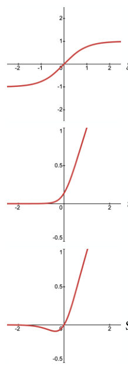
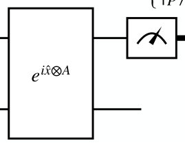
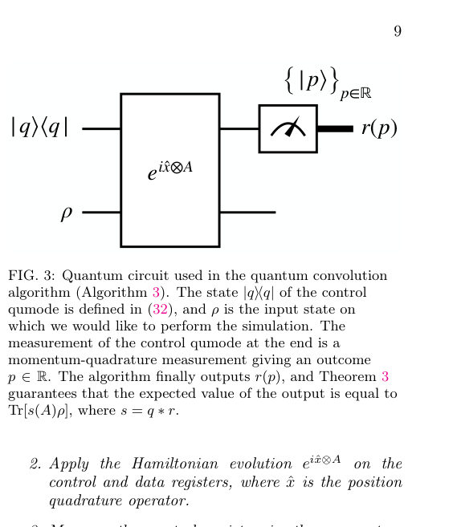
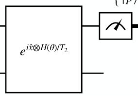
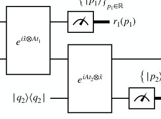
Summary. This paper proposes a way to turn classical neural network architectures into quantum-native models by quantizing the neuron's activation function. It provides a rigorous mathematical framework and efficient hybrid algorithms for training these networks, proving that they possess a computational complexity that makes them hard to simulate classically.
Why it may be interesting. not directly relevant
Main problem. The paper aims to develop a framework for quantizing classical neurons into 'Fermi-Dirac machines' and providing efficient hybrid quantum-classical algorithms for their training and evaluation.
Main result. The authors prove that a decision problem based on these neurons is BQP-complete, providing evidence against efficient classical simulation, and demonstrate that these neurons can learn functions that classical neurons cannot when processing quantum data.
Method. The approach uses canonical quantization to promote classical Hamiltonians to quantum operators, employing functional calculus, Hamiltonian simulation, and the Hadamard test to develop hybrid algorithms for gradient estimation and objective function evaluation.
Model / system. The model consists of parameterized quantum Hamiltonians (including second-order interactions like the Heisenberg or transverse-field Ising models) where activation functions (e.g., Fermi-Dirac, SiLU, GeLU) are applied to the Hamiltonian operator.
Key observables. The activation observable phi(H_Q(theta)) and its expectation value with respect to an input quantum state rho.
Important parameters / regimes. Temperature (T) controlling activation sharpness, weights (w), bias (b), and interaction coefficients (Omega, omega).
Assumptions / limitations. The Hamiltonians are assumed to be k-local, and the advantage is specifically tied to the presence of quantum input data (entangled or non-orthogonal states).
Figures summary. Figure 1 depicts the conceptual transition from classical to quantized neurons; Figure 2 shows quantum circuits for gradient and objective function estimation; Figure 3 illustrates a general quantum convolution algorithm.
Paper structure. The paper introduces the quantization framework, defines the physical model and activation functions, develops hybrid algorithms for estimation and gradients, provides complexity-theoretic proofs of BQP-completeness, and concludes with numerical experiments and generalizations to continuous variables.
Fermi-Dirac machines were proposed recently as an approach to solving semidefinite optimization problems on quantum computers. Here, we reinterpret them as canonical quantizations of classical neurons. By viewing a classical neuron as an activation function applied to a parameterized classical Hamiltonian, we quantize this model by replacing classical variables with operators whose eigenvalues encode their possible values. This follows the standard approach to canonical quantization in quantum mechanics. Crucially, when the Hamiltonian consists of commuting operators, our construction reduces exactly to a classical neuron. More generally, our approach yields an activation observable, defined as an activation function applied to a parameterized quantum Hamiltonian. The output of this quantized neuron is a random variable with expectation value equal to that of the activation observable with respect to an input state. We develop efficient hybrid quantum-classical algorithms for evaluating outputs and gradients of our quantized neurons, enabling evaluation and training. These algorithms rely on basic primitives that include random sampling, Hamiltonian simulation, and the Hadamard test. We also quantize a whole host of other activation functions, including the smooth rectified linear unit (ReLU), sigmoid linear unit, Gaussian-smoothed ReLU, and Gaussian error linear unit (GeLU), which are known to be useful for deep learning applications. Numerical experiments indicate that neurons based on quantum Hamiltonians can learn functions that classical neurons cannot. We further define a computational decision problem based on Fermi-Dirac neurons and prove that it is BQP-complete, providing complexity-theoretic evidence against efficient classical simulation. Finally, we generalize our approach to continuous quantum variables and sketch two different ways of composing these neurons into networks.
Authors: V. V. Parazian
Type: theory · Category: other · PDF: https://arxiv.org/pdf/2605.25578v1
Analysis basis: full PDF text, analyzed in chunks
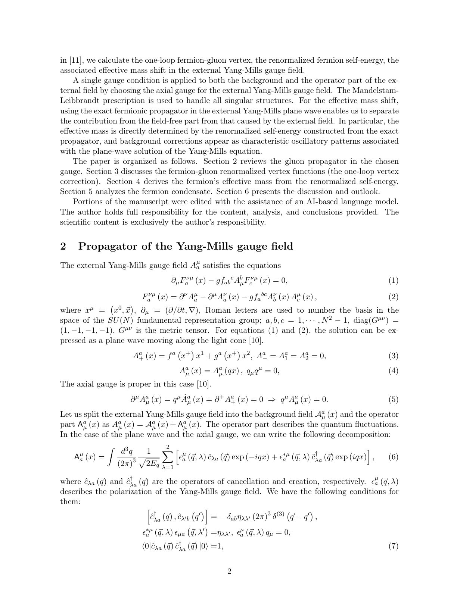
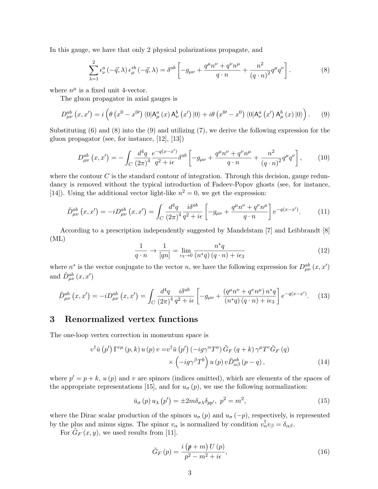
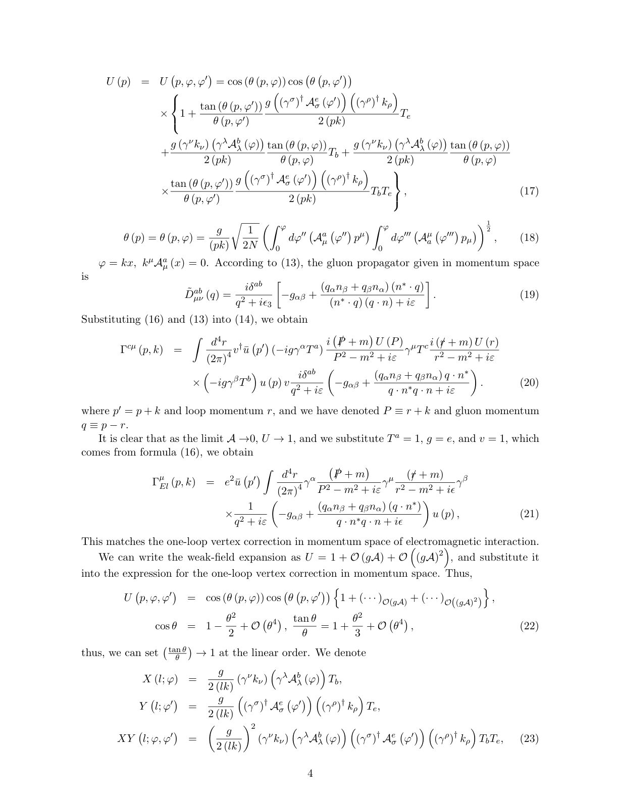
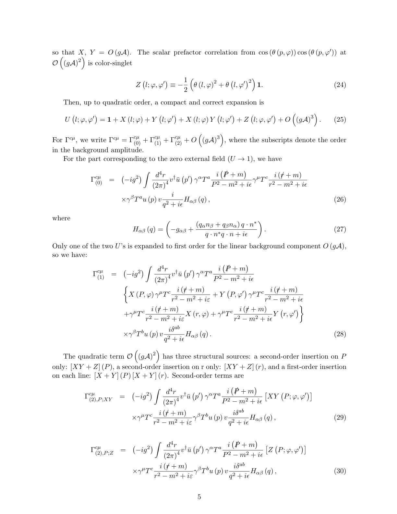
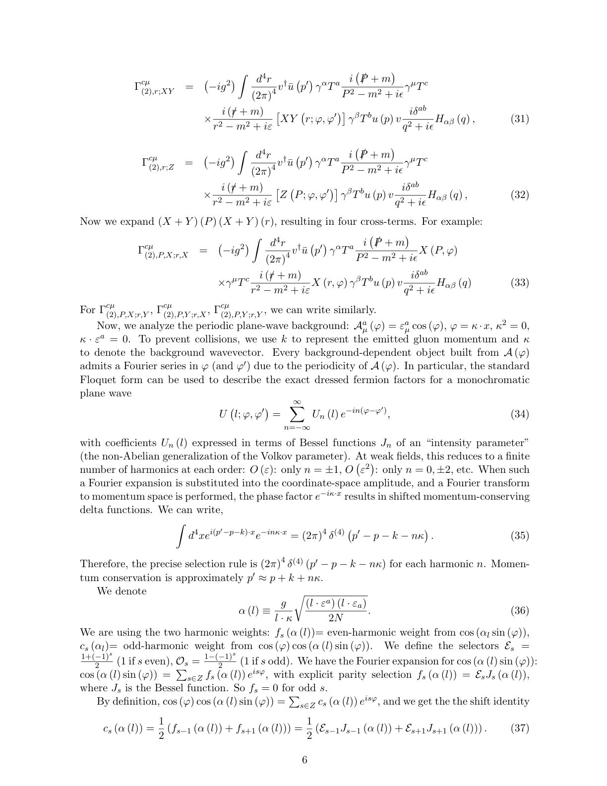
Summary. This paper extends the formalism of strong-field QED to non-Abelian Yang-Mills theory to study how gluonic backgrounds affect fermion properties. It demonstrates that such backgrounds induce a fermion condensate and a mass shift without altering the fundamental ultraviolet divergence structure of the theory.
Why it may be interesting. not directly relevant
Main problem. The paper investigates how a classical, periodic Yang-Mills (non-Abelian) plane-wave background field modifies the fermion-gluon vertex, the fermion effective mass, and the fermion condensate.
Main result. The study derives a gauge-consistent pole mass shift and shows that the background field induces a non-zero fermion condensate, while the UV divergence structure of the theory remains unchanged by the background.
Method. The author uses an exact Green's function for the Dirac operator in a non-Abelian plane-wave background, employing the Mandelstam-Leibbrandt prescription for regularization and a weak-field expansion for loop corrections.
Model / system. A system of fermions interacting with an external, monochromatic, non-Abelian (SU(N)) plane-wave gauge field moving along a light cone, treated within the axial gauge.
Key observables. Renormalized fermion-gluon vertex function, fermion effective mass shift, and the fermion condensate.
Important parameters / regimes. Gauge coupling constant (g), color factors (CF, CA), field intensity parameter (alpha), and the light-like vector (k).
Assumptions / limitations. The background field is assumed to be a classical, periodic plane-wave solution, and the analysis relies on a weak-field expansion.
Paper structure. The paper begins by defining the non-Abelian plane-wave background and the axial gauge framework, proceeds to calculate the dressed fermion propagator and vertex functions using a weak-field expansion, then derives the one-loop mass shift and fermion condensate, and concludes with a discussion on UV behavior and physical applications.
We investigate the renormalized fermion-gluon vertex, the fermion effective mass, and the fermion condensate when the fermion propagates in an external Yang-Mills gauge field. We use an exact Green's function for the Dirac operator in a non-Abelian plane-wave gauge field to construct the renormalized vertex function, calculate the on-shell fermion self-energy, and the background-dependent condensate. We consider both the background and operator fields in the axial gauge $k^{μ} \mathcal{A}_{μ}^{a}=0$, thereby preserving the gauge. Its applications to strong-field QCD and non-Abelian Schwinger physics are discussed.
Authors: Ashutosh Srivastava, Pankaj A. Apte
Type: theory · Category: statistical mechanics · PDF: https://arxiv.org/pdf/2605.25926v1
Analysis basis: full PDF text, analyzed in chunks
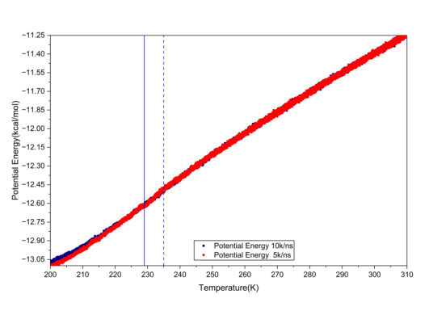
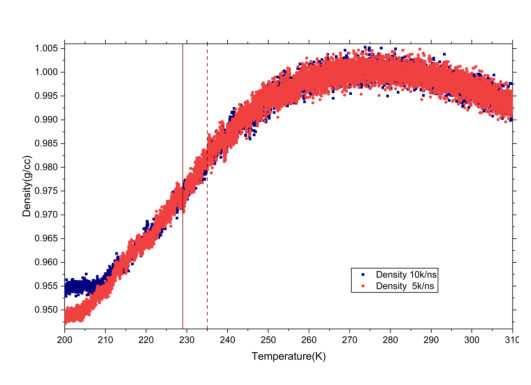
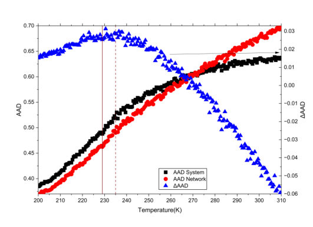
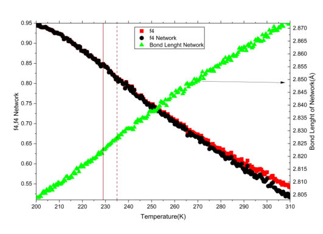
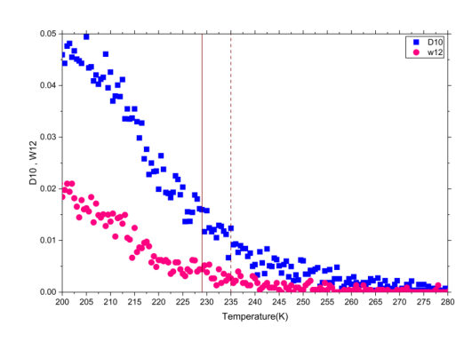
Summary. This study demonstrates that the crystallization of supercooled water into LDA ice is triggered by the 'freezing' of its tetrahedral hydrogen-bonded network. When the network becomes rigid, the system shifts from a network-driven relaxation to a crystallization-driven relaxation. This mechanism provides a specific pathway for structural ordering in the absence of traditional crystal nucleation.
Why it may be interesting. not directly relevant
Main problem. Identifying the specific mechanism by which crystallization into Low-Density Amorphous (LDA) ice is initiated in deeply supercooled water across its limit of stability.
Main result. The freezing of the tetrahedral amorphous network, characterized by a loss of structural relaxation, triggers a change in the relaxation mechanism that drives crystallization via cubic and hexagonal motifs.
Method. Molecular dynamics simulations using the TIP4P/2005 water potential in an NPT ensemble with linear cooling rates.
Model / system. Supercooled water modeled using the TIP4P/2005 potential, focusing on the transition from a liquid state to LDA ice.
Key observables. Tetrahedrality (f4c), Average Angular Deviation (AAD), density, potential energy, and presence of cubic (D10) and hexagonal (W12) structural motifs.
Important parameters / regimes. Cooling rates of 5 to 10 K/ns, temperature of maximum density (T0 = 277 K), and the limit of stability (Ts approx 235 K).
Assumptions / limitations. The mechanism may be general to tetrahedral liquids, but the specific extent of crystallization may depend on the choice of water potential.
Figures summary. Figure 1 and 2 show potential energy and density vs. temperature with markers for crossover and freezing points; Figure 3 plots AAD and its difference; Figure 4 tracks 4-coordinated molecules and bond length; Figure 5 shows the fraction of cubic and hexagonal motifs.
Paper structure. The paper introduces the problem of crystallization in supercooled water, describes the MD simulation setup, details the dynamical crossover and network freezing process, analyzes the resulting crystallization into cubic/hexagonal motifs, and discusses the potential universality of this mechanism.
In this work, we provide mechanistic insight into the initial stages of formation of ice across the limit of stability of supercooled water. Such an analysis is particularly important since crystal nucleation is not a relevant mechanism under these conditions. Using molecular dynamics simulation with the TIP4P/2005 potential, water is cooled at a constant pressure with cooling rates of 5 to 10 K per nanosecond. As the liquid is cooled across the temperature of maximum density (T_0 = 277 K), we find that there is a continuous increase in the tetrahedrality of the system. As the cooling continues across the limit of stability of water (T_s $\approx$ 235 K), large scale thermal fluctuations dissipate while the thermal equilibration is achieved through small scale fluctuations. This phenomenon, known as the dynamical crossover [Goutam et. al. in J. Stat. Phys., 168: 1302--1318 (2017)], ends the existence of the liquid state. Subsequently, we find that the tetrahedral network drives the decrease of energy and density. This process terminates when the network undergoes `freezing' (i.e., the bonds of the network acquire sufficient rigidity), due to which the network evolution, as a whole, stops. This triggers a qualitative change in the relaxation mechanism: subsequent relaxation occurs through crystallization, i.e., an increase in the structural order. In particular, we find that the cubic and hexagonal crystalline motifs, which possess medium range order, increase rapidly across the freezing point. In the resulting LDA ice states, cubic ice is found to have a significant contribution in the overall extent of crystallization, which is consistent with the experimental findings. Overall, our work provides the specific mechanism by which crystallization (leading to LDA ice) is initiated across the limit of stability of supercooled water.
Authors: Yihua Sun, Yuchen Fan
Type: theory · Category: statistical mechanics · PDF: https://arxiv.org/pdf/2605.25946v1
Analysis basis: full PDF text, analyzed in chunks
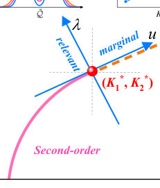
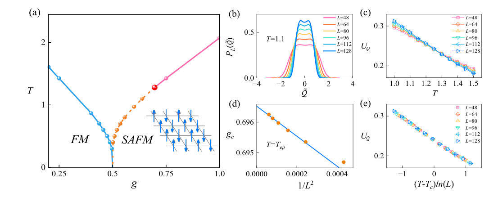
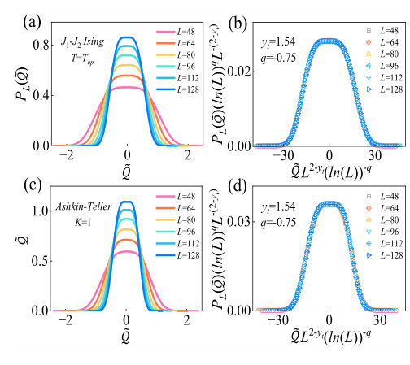
Summary. The paper introduces a generalized field-mixing framework to accurately identify critical endpoints in systems where marginal scaling fields cause deceptive pseudo-first-order behavior. By applying this to the $J_1$-$J_2$ Ising model, the authors prove the stripe-ordering endpoint follows four-state Potts universality. This resolves a decades-old controversy regarding the phase transition nature in this frustrated system.
Why it may be interesting. not directly relevant
Main problem. Resolving the long-standing controversy regarding the nature and location of the stripe-ordering endpoint in the $J_1$-$J_2$ Ising model, specifically distinguishing true first-order transitions from pseudo-first-order signatures caused by marginal flow.
Main result. The authors identify the endpoint as belonging to the four-state Potts universality class with logarithmic corrections, resolving the ambiguity caused by marginally irrelevant scaling fields.
Method. A new generalized field-mixing framework that separates relevant detuning from marginal drift, combined with Monte Carlo simulations and finite-size scaling analysis.
Model / system. The frustrated square-lattice $J_1$-$J_2$ Ising model with nearest-neighbor ($J_1$) and next-nearest-neighbor ($J_2$) antiferromagnetic couplings.
Key observables. Magnetic Binder cumulant ($U_M$), nematic Binder cumulant ($U_N$), magnetic order parameter ($m$), and centered fluctuations of the mixed scaling operator ($ ilde{Q}$).
Important parameters / regimes. Frustration ratio $g = J_2/J_1$, temperature $T$, and the scaling variables involving logarithmic corrections $(\ln L)^q$.
Assumptions / limitations. The framework assumes the endpoint criticality is governed by one relevant and one marginally irrelevant scaling field.
Figures summary. Figure 1 shows the schematic of the field-mixing framework; Figure 2 illustrates the application to the $J_1$-$J_2$ model; Figure 3 shows histogram scaling; Figure 4 displays Binder cumulant crossings and data collapse.
Paper structure. The paper introduces a new field-mixing framework, applies it to the $J_1$-$J_2$ Ising model to locate the stripe-ordering endpoint, validates the results via universality class identification and comparison with the Ashkin-Teller model, and concludes by demonstrating the resolution of historical numerical ambiguities.
Identifying the asymptotic criticality of a critical endpoint is challenging, as pseudo-first-order signatures persist over accessible system sizes and mask its underlying critical nature. This ambiguity is amplified at endpoints controlled by a marginally irrelevant scaling field, where logarithmic flow delays the onset of asymptotic scaling. Here we develop a generalized field-mixing framework for endpoint criticality governed by one relevant scaling field together with a marginally irrelevant one, a setting that lies outside the conventional two-relevant-field formulation. By constructing a finite-size pseudocritical manifold, the framework removes the normal relevant detuning and exposes the residual marginal drift, enabling controlled histogram- and Binder-based finite-size analyses. We apply this approach to the frustrated square-lattice $J_1$--$J_2$ Ising model, where the location and even the nature of the stripe-ordering endpoint have remained controversial for decades. The endpoint is isolated directly as a distinct singular point, rather than inferred from where the phase boundary appears most Potts-like, and its asymptotic criticality is shown to follow four-state Potts universality with logarithmic corrections. This identification is independently supported by direct comparison with the Potts point of the Ashkin--Teller model and by consistent Binder scaling in both the magnetic and nematic sectors. Our results resolve a longstanding numerical ambiguity in a paradigmatic frustrated Ising system and establish a general framework for extracting asymptotic endpoint criticality in the presence of marginal flow.
Authors: Peiyuan Teng
Type: theory · Category: other · PDF: https://arxiv.org/pdf/2605.25858v1
Analysis basis: full PDF text, analyzed in chunks




Summary. This paper develops a mathematical framework for applying geometric quantization to spaces with singularities, such as orbifolds. It specifically resolves how to handle the lack of equivariant half-forms in systems with reflection symmetry by using half-densities, ensuring correct quantum spectra.
Why it may be interesting. not directly relevant
Main problem. Extending the framework of geometric quantization from smooth manifolds to orbifolds, specifically addressing challenges like quotient singularities, metaplectic correction obstructions, and the failure of Kähler polarizations in the presence of reflections.
Main result. The paper establishes a unified treatment of geometric quantization on orbifolds, demonstrating that while genuine half-form bundles may be obstructed by reflection isotropy, the use of half-densities can restore physical consistency and correct energy spectra.
Method. The author uses the Kostant-Souriau prequantization framework, applying tools from orbifold theory, de Rham cohomology, and metaplectic (half-form) correction to analyze specific symplectic orbifolds.
Model / system. The study focuses on symplectic orbifolds including planar cones, orbispheres (S2(n, m)), and the cotangent bundle of a dihedral quotient (T*(C/Dn)).
Key observables. Hamiltonian vector fields, Poisson brackets, commutator relations, and position-based observables like radial position (rho^2) and kinetic energy.
Important parameters / regimes. Planck's constant (hbar), orbifold weights (n, m), and the Maslov index.
Assumptions / limitations. The paper assumes orbifolds with mild singularities (local group-quotient setting) and focuses on cases where the symplectic form is either exact or satisfies specific integrality conditions.
Paper structure. The paper progresses from a review of standard smooth manifold quantization to the development of orbifold-specific theory, followed by detailed analysis of geometric examples (orbispheres and dihedral quotients), investigation of quantum spectra, and a formal extension of the quantization program.
This text introduces geometric quantization on orbifolds. After reviewing the necessary background, it develops new treatments of prequantization, polarizations, and metaplectic correction for symplectic orbifolds.
Authors: Kornikar Sen, Miguel A. Martin-Delgado
Type: theory · Category: quantum information and computing · PDF: https://arxiv.org/pdf/2605.25692v1
Analysis basis: full PDF text, analyzed in chunks
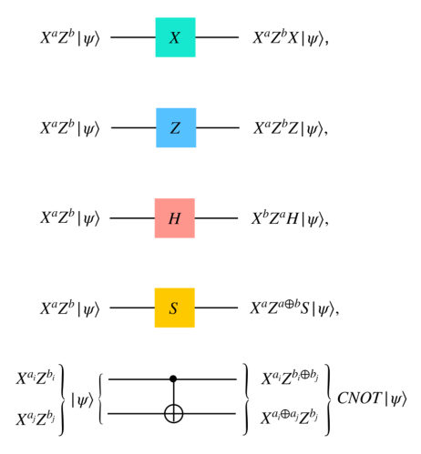
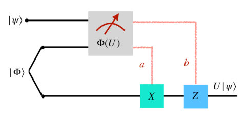
Summary. This paper investigates how to combine quantum error correction with homomorphic encryption to allow secure, noise-resilient computation in the cloud. It provides the mathematical conditions required to keep encrypted data within a protected code space and offers strategies to overcome the difficulty of performing non-Clifford gates on encrypted data.
Why it may be interesting. not directly relevant
Main problem. Determining the algebraic compatibility between quantum homomorphic encryption (QHE) and quantum error correction (QEC) to ensure that encrypted states remain within the code space during cloud-based computation.
Main result. The authors establish a necessary and sufficient condition for stabilizer codes to be compatible with transversal Pauli masking and propose solutions for implementing non-Clifford gates, such as using triorthogonal codes or logical-gate masking.
Method. Algebraic analysis of stabilizer codes, verification using specific examples (Shor, Steane, and 3D color codes), and the development of gate teleportation protocols for non-Clifford gates.
Model / system. A client-server model for cloud quantum computing using an 'honest-but-curious' server, employing Pauli-based encryption (block-Pauli masking) and stabilizer error-correcting codes.
Key observables. Error syndromes, encryption keys (a, b), and measurement outcomes (ra, rb) from Bell measurements.
Important parameters / regimes. Small error rate regime (p << 1).
Assumptions / limitations. The server is honest-but-curious (not malicious); the existence of pre-shared Bell states; and the availability of physical implementations for logical gates.
Figures summary. Schematic of the gate teleportation process, visual representation of key-updating rules for Clifford gates, and a walkthrough of a two-qubit circuit involving H, T, T-dagger, and S gates.
Paper structure. The paper introduces the problem of QHE and QEC compatibility, derives a general algebraic criterion for stabilizer codes, verifies this for specific codes (Shor, CSS, 3D color), addresses the non-Clifford gate obstruction, and presents solutions via triorthogonal codes and logical-gate masking.
Homomorphic quantum error correction aims to protect quantum data against both unauthorized access and environmental noise during server-based processing. We investigate the algebraic compatibility between quantum homomorphic encryption and quantum error correction, determining precise conditions under which encrypted encoded states remain inside the relevant code space during storage and computation. Our work establishes a necessary and sufficient criterion for an $[[n,1,d]]$ stabilizer code to remain compatible with the restricted transversal block-Pauli masking $U_{\rm enc}(a,b)=(X^aZ^b)^{\otimes n}$, stated explicitly for $[[n,1,d]]$ codes and extending directly to code-space preservation for $[[n,k,d]]$ codes. We verify this condition for standard examples (bit-flip and Shor codes, with the phase-flip repetition code following analogously), derive a practical criterion for Calderbank-Shor-Steane codes, and extend the analysis to three-dimensional color codes. A critical challenge emerges for non-Clifford gate implementation: the Shor code lacks a naive transversal $T$-gate implementation of the desired logical operation on encrypted encoded data. We present two routes around this obstruction. First, suitable triorthogonal codes admit transversal $T$-type logical implementations, up to Clifford corrections. Second, logical-gate masking gives code-space compatibility for arbitrary stabilizer codes, provided that suitable unitary representatives of the required logical gates are available. These results separate code-space compatibility from a full cryptographic security proof and provide explicit criteria for combining error correction with homomorphic processing in cloud quantum computing.
Authors: Khen Cohen, Mark Glass, Meir Feder, Yaron Oz
Type: theory · Category: disordered systems and neural networks · PDF: https://arxiv.org/pdf/2605.24502v1
Analysis basis: full PDF text, analyzed in chunks
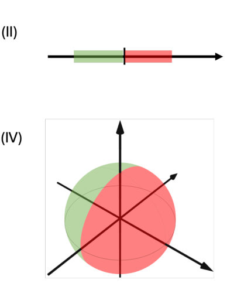
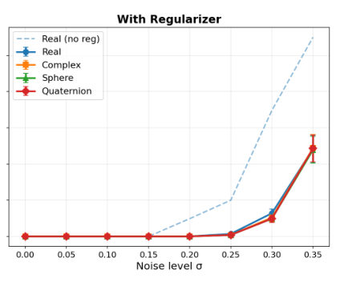
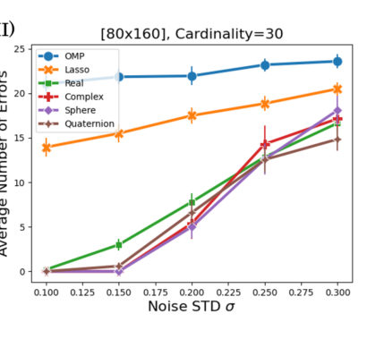
Summary. This paper proposes a new way to solve hard optimization problems by treating discrete bits as complex phases. This approach creates a natural 'push' toward discrete values, allowing for much more accurate solutions to complex problems like QUBO and sparse coding even under high noise.
Why it may be interesting. not directly relevant
Main problem. Addressing the computational intractability of NP-hard combinatorial optimization problems, such as QUBO and sparse coding, by overcoming the limitations of standard continuous convex relaxations.
Main result. The authors demonstrate that parameterizing binary variables as complex phases introduces an implicit regularization mechanism that promotes convergence to discrete states, achieving zero error in large-scale noisy QUBO tasks and outperforming LASSO in sparse coding.
Method. A physics-inspired continuous relaxation framework that maps discrete binary variables to continuous wave-like states on the complex unit circle, utilizing gradient descent and analyzing the resulting implicit regularization via random matrix theory.
Model / system. The framework utilizes an Ising Hamiltonian formulation where discrete spins are relaxed into higher-dimensional algebraic manifolds, specifically the complex unit circle, spherical, and quaternion spaces.
Key observables. Ground-state convergence rates, bit error rates, and recovery success of planted solutions.
Important parameters / regimes. The diagonal shift hyperparameter beta, noise levels sigma, sparsity cardinality C, and the spectral properties (singular values) of the measurement matrix A.
Assumptions / limitations. The effectiveness of the binarization depends on the spectral characteristics of the interaction matrix, and for certain QUBO formulations, the measurement matrix is assumed to be square with determinant 1.
Figures summary. Visualizations of the continuous relaxation process across different manifolds (real, complex, spherical) and histograms of estimated ground-state energies.
Paper structure. The paper introduces the complex phase relaxation framework, provides analytical proofs for the implicit regularization and binarization basin, demonstrates the extraction of this regularizer for real-valued use, and validates the method through QUBO, sparse coding, and planted Ising model benchmarks.
We introduce a physics-inspired continuous relaxation framework that yields substantially improved solutions for NP-hard combinatorial optimization problems, including Quadratic Unconstrained Binary Optimization (QUBO), binary sparse coding, and planted-solution Ising models. By parameterizing discrete binary variables as continuous wave-like states on the complex unit circle, we inherently smooth highly non-convex energy landscapes. We show that representing binary variables as complex phases reveals an implicit regularization mechanism that promotes convergence toward discrete states. Extracting this mechanism yields significant improvements even within standard real-valued optimization frameworks, using this regularizer explicitly. Empirically, this regularization yields vastly higher ground-state convergence rates than standard real-valued alternatives. Our models achieved zero error in large-scale 160x160 QUBO tasks under severe noise (sigma=0.25), and outperformed traditional algorithms (OMP and LASSO) in underdefined sparse coding with perfect recovery at sigma=0.15. The solver's robustness was further validated by recovering exact ground-state configurations in 8 out of 11 rigorously engineered planted-solution benchmarks.
Authors: Cong Ling, Hao Yan, Nicholas Zhao
Type: theory · Category: quantum information and computing · PDF: https://arxiv.org/pdf/2605.24798v1
Analysis basis: full PDF text, analyzed in chunks
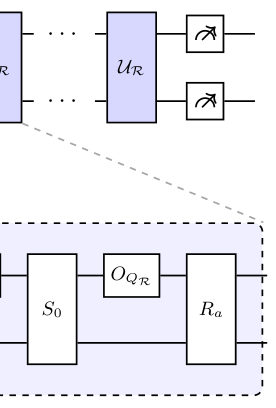
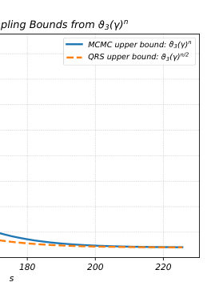
Summary. This paper introduces a quantum algorithm to accelerate the discrete Gaussian sampling required for lattice-based cryptographic attacks. By using quantum rejection sampling, the authors achieve a quadratic speedup in the sampling process, leading to lower estimated security levels for post-quantum standards like Kyber.
Why it may be interesting. not directly relevant
Main problem. The Gaussian sampling step in lattice-based cryptographic attacks (dual attack) and GPV trapdoor sampling is a significant computational bottleneck that remains classical.
Main result. The authors develop a quantum algorithm using Quantum Rejection Sampling (QRS) that achieves a quadratic speedup in sampling complexity, reducing the estimated attack costs for Kyber variants by up to 13 bits.
Method. The method combines the lower bound of Klein's algorithm with the Quantum Rejection Sampling framework to prepare truncated lattice Gaussian states using amplitude amplification.
Model / system. The work focuses on lattice-based cryptographic primitives, specifically the Learning with Errors (LWE) and Short Integer Solution (SIS) problems involving q-ary lattices and their duals.
Key observables. Attack cost estimates (in bits), total variation distance between truncated and full distributions, and the empirical cosine score for identifying secret vectors.
Important parameters / regimes. The Gaussian parameter (s), the truncation radius (R), the sampling ratio (Delta_R), and the Gram-Schmidt orthogonalization profile (Delta).
Assumptions / limitations. The algorithm assumes access to a coherent oracle for a truncated Klein proposal distribution and requires a truncation radius that ensures negligible error in total variation distance.
Figures summary. Figure 1 shows the concentration of discrete Gaussian mass for different Gaussian parameters; Figure 2 illustrates the oracle-level decomposition of the QRS circuit; Figure 3 shows the exponential gap between MCMC and QRS upper bounds.
Paper structure. The paper introduces the bottleneck in lattice sampling, proposes a QRS-based framework using a truncated Klein proposal, provides mathematical proofs for complexity reduction and error bounds, and evaluates the impact on Kyber and FALCON security parameters.
In this work, we revisit the dual attack and GPV trapdoor sampling, focusing on the lattice Gaussian sampling term, which can be a significant bottleneck in the overall complexity. We show that this sampling step can be quantumly accelerated by combining the lower bound underlying Wang and Ling's analysis of Klein's algorithm with the quantum rejection sampling (QRS) framework proposed by Ozols et al. Specifically, this lower bound gives precisely the pointwise domination condition required for quantum rejection sampling when given coherent oracle access to a truncated Klein proposal distribution, which yields a quantum procedure for preparing the truncated dual $q$-ary lattice Gaussian with a quadratic reduction in the sampling complexity. The truncation radius is chosen so that the truncated distribution is negligibly close to the full lattice Gaussian in total variation distance. Substituting this sampler into the dual attack framework results in reduced overall attack-cost estimates. Compared with Pouly and Shen's modern dual attack under the same parameter choices, our estimates reduce the attack cost by \(9\), \(4\), and \(13\) bits for Kyber-512, Kyber-768, and Kyber-1024, respectively. We also report the corresponding estimates with modulus switching. Finally, by replacing the Markov chain Monte Carlo (MCMC) sampler with the QRS algorithm, we achieve a similar quadratic speedup in the GPV signing process.
Authors: Bing Shao, Guangjie Zhang, Longwen Zhou, Jiangbin Gong, Weiwei Zhu
Type: theory · Category: disordered systems and neural networks · PDF: https://arxiv.org/pdf/2605.25033v1
Analysis basis: full PDF text, analyzed in chunks
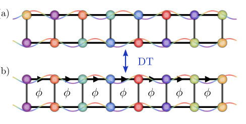
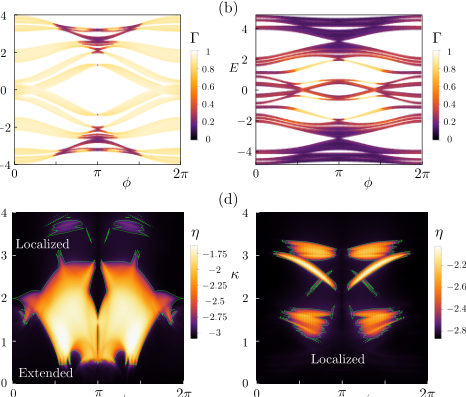
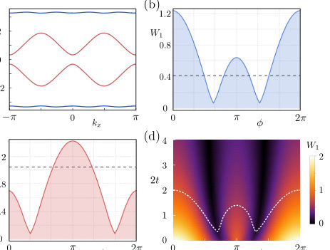
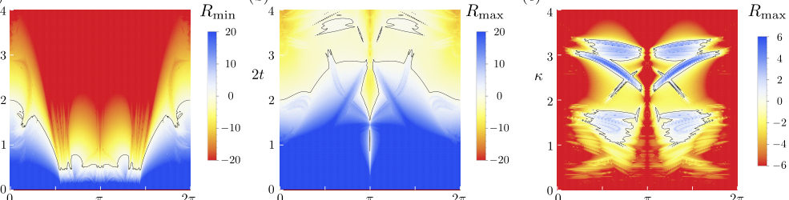
Summary. This paper demonstrates that shifting the legs of a quasiperiodic ladder relative to each other allows for the tuning of localization phases via a synthetic magnetic flux. It introduces a highly accurate, system-size-independent method for identifying phase transitions in quasiperiodic systems. The findings suggest a tunable platform for studying complex localization phenomena like reentrant transitions.
Why it may be interesting. not directly relevant
Main problem. Investigating how a lateral shift between two legs of a quasiperiodic ladder can act as a control knob to induce various localization-delocalization transitions.
Main result. The lateral shift effectively generates a synthetic magnetic flux in reciprocal space, enabling magnetic-flux-enhanced, suppressed, and reentrant localization transitions. The study also introduces a new, system-size-independent diagnostic called the anisotropic bandwidth ratio (Rj) to precisely identify phase boundaries.
Method. The authors use a duality transformation to map the real-space ladder to a reciprocal-space Hamiltonian and employ a commensurate approximation using Fibonacci numbers to analyze the band structure.
Model / system. A 1D quasiperiodic ladder where two legs are subject to the same quasiperiodic onsite potential but are laterally shifted relative to each other, effectively simulating a synthetic magnetic flux.
Key observables. Inverse Participation Ratio (IPR), Normalized Participation Ratio (NPR), Fractal Dimension (FD), eta diagnostic, and the anisotropic bandwidth ratio (Rj).
Important parameters / regimes. Lateral shift (q or phi), interleg coupling (kappa), quasiperiodic potential strength (v), and the inverse golden ratio (alpha).
Assumptions / limitations. The use of a commensurate approximation to treat the irrational quasiperiodic potential as a periodic system with a finite unit cell.
Figures summary. Fig 1 shows the schematic of the ladder and its duality-transformed version with synthetic flux. Fig 2/4 shows phase maps and logarithmic plots of the Rj diagnostic (Rmin and Rmax) used to delineate extended, mixed, and localized phases.
Paper structure. The paper introduces the quasiperiodic ladder model, establishes the duality between lateral shift and synthetic magnetic flux, presents numerical results for various localization transitions, introduces the Rj diagnostic for phase boundary prediction, and concludes with potential applications.
This work reports rich localization-delocalization transitions in a quasiperiodic ladder, of which the two legs are subject to the same quasiperiodic onsite potential but can be shifted laterally relative to each other. It is found that the lateral shift between the two legs effectively generates a magnetic flux in the reciprocal momentum space. The lateral shift thus offers a control knob, allowing us to access and simulate rich phenomena including magnetic-flux-enhanced localization, magnetic-flux-suppressed localization, and magnetic-flux-induced reentrant localization transitions. The underlying physical mechanisms as well as the phase boundaries separating localized, mixed, and extended phases are both qualitatively and quantitatively understood, based on a band-structure analysis that employs a commensurate approximation to the quasiperiodic potential, requiring only unit cells of small to modest sizes. Our work provides a highly tunable platform for exploring localization physics with promising applications such as quantum switching, and a broadly applicable approach for understanding localization-delocalization transitions in quasiperiodic systems.
Authors: Leonie Woodland, Farid Labib, Dmitry Khalyavin, Pascal Manuel, Fabio Orlandi, Hubertus Luetkens, Ryuji Tamura
Type: experiment · Category: strongly correlated electrons · PDF: https://arxiv.org/pdf/2605.26044v1
Analysis basis: full PDF text, analyzed in chunks
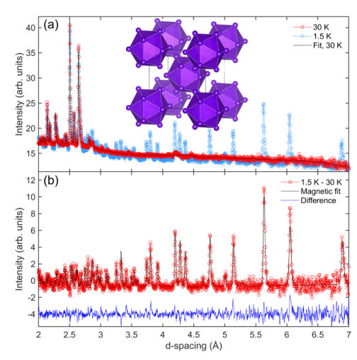
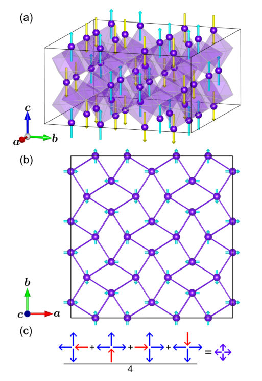
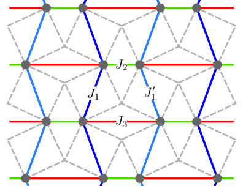
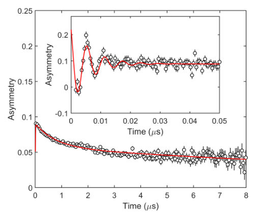
Summary. This paper identifies a candidate for octahedral spin-ice physics in the quasicrystal approximant Cd6Tb. By combining neutron diffraction and muon spin rotation, the authors demonstrate that the magnetic ground state consists of both ordered and fluctuating spin components, a phenomenon known as magnetic fragmentation.
Why it may be interesting. not directly relevant
Main problem. The study aims to resolve the microscopic magnetic ground state of the Tsai-type quasicrystal approximant Cd6Tb and determine if it realizes magnetic fragmentation, a key prediction of octahedral spin-ice physics.
Main result. The researchers discovered a noncoplanar multi-k magnetic ground state where one-third of the Tb moments are ordered and two-thirds exhibit persistent spin dynamics, providing a potential realization of magnetic fragmentation.
Method. Neutron powder diffraction was used for magnetic structure refinement, while Muon Spin Rotation (muSR) and AC susceptibility were employed to investigate spin dynamics and distinguish between static and dynamic magnetism.
Model / system. The system is Cd6Tb, a 1/1-cubic quasicrystal approximant featuring a network of corner-sharing octahedra with Ising-like Tb3+ moments.
Key observables. Neutron diffraction patterns, magnetic propagation vectors (k1 and k2), magnetic moments (apical vs. equatorial), muSR asymmetry/relaxation rates, and AC susceptibility.
Important parameters / regimes. Magnetic ordering temperature (~20 K), persistent dynamics on microsecond timescales, and the reduction of equatorial moments to ~4.62 uB compared to apical moments of ~10.2 uB.
Assumptions / limitations. The structural refinement used a cubic model because the subtle monoclinic distortion could not be fully resolved in powder neutron diffraction; diffraction alone could not distinguish between certain relative phases of the magnetic structure.
Figures summary. Fig 1 shows neutron diffraction data and structural fits; Fig 2 illustrates the refined magnetic structures for apical and equatorial spins and the spin-flip model; Fig 3 shows the frustrated Heisenberg exchange model.
Paper structure. The paper introduces the problem of quasicrystal magnetism, describes the structural and magnetic characterization of Cd6Tb via neutron diffraction, presents the discovery of the multi-k ground state, uses muSR to prove the presence of persistent dynamics, and concludes with the identification of magnetic fragmentation.
Magnetic ordering in quasicrystals has recently emerged as a fertile ground for discovering unconventional magnetic states beyond the framework of periodic crystals. However, elucidating the microscopic origin of such states remains challenging due to the intrinsic aperiodicity of quasicrystals. Here, we address this issue by investigating the prototypical Tsai-type quasicrystal approximant Cd6Tb, which preserves the essential local geometry and connectivity of icosahedral quasicrystals while allowing detailed structural and magnetic characterization due to its translational periodicity. Using neutron diffraction measurements, we find a noncoplanar multi-k magnetic ground state composed of Ising-like Tb moments arranged on a network of corner-sharing octahedra, the ingredients required to host octahedral spin-ice physics. Remarkably, only one third of the Tb moments develop long-range magnetic order, whereas the remaining moments display strongly reduced static order accompanied by persistent spin dynamics on microsecond timescales, as evidenced by muon spin rotation. This coexistence of ordered and fluctuating moments constitutes a potential realization of magnetic fragmentation - a key prediction of octahedral spin-ice physics - in a quasicrystal-related material.
Authors: Tadataka Watanabe, Mai Watanabe, Sakurako Suganuma, Andreas Bauer, Christian Pfleiderer
Type: experiment · Category: strongly correlated electrons · PDF: https://arxiv.org/pdf/2605.25564v1
Analysis basis: full PDF text, analyzed in chunks
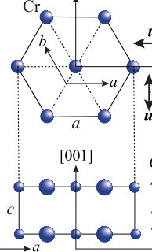
Summary. This paper uses ultrasound spectroscopy to reveal how lattice vibrations and magnetic order interact in the frustrated antiferromagnet CrB2. It demonstrates that the material uses both transverse and longitudinal magnetoelastic coupling to manage magnetic frustration and Fermi-surface instabilities. These findings provide insight into the complex magnetostructural dynamics in metallic frustrated systems.
Why it may be interesting. not directly relevant
Main problem. Investigating the interplay between lattice and magnetic degrees of freedom in the metallic frustrated antiferromagnet CrB2, specifically how magnetoelastic coupling affects magnetic frustration and Fermi-surface nesting.
Main result. The study identifies that transverse magnetoelastic coupling leads to Curie-type softening in the shear modulus C66 as a precursor to a spin-Jahn-Teller transition, while longitudinal coupling suppresses Fermi-surface nesting.
Method. Ultrasound velocity measurements using the phase-comparison technique on high-quality single crystals of CrB2.
Model / system. The physical system is CrB2, a hexagonal metallic frustrated antiferromagnet with a Cr triangular lattice and a Neel temperature of approximately 88 K.
Key observables. Elastic moduli (C11, C33, C44, C66), sound velocities (longitudinal and transverse), and lattice parameter ratio (c/a).
Important parameters / regimes. Neel temperature TN ~ 88 K, frustration ratio |thetaW/TN| ~ 8.5, and temperature range from 2 K to 300 K.
Assumptions / limitations. The analysis assumes the Curie-type softening can be modeled using a mean-field expression and that conventional elastic hardening follows the Varshni equation.
Figures summary. Figure 1 shows the CrB2 unit cell and sound propagation vectors; Figure 2 displays the temperature dependence of compressive moduli C11 and C33; Figure 3 shows the temperature dependence of shear moduli C44 and C66; Figure 5 highlights the relative variations in different moduli; Figure 6 shows the c/a ratio temperature dependence.
Paper structure. The paper introduces the material properties, describes the experimental ultrasound setup, presents the temperature dependence of various elastic moduli, analyzes the mechanisms of softening (spin-JT vs. FS nesting), and concludes with the dual role of magnetoelastic coupling.
Hexagonal chromium diboride CrB$_2$ is a metallic frustrated antiferromagnet with a Néel temperature $T_N \sim$ 88 K. In CrB$_2$, Cr 3$d$ electrons not only give rise to localized magnetic moments but also contribute to metallic conduction. We perform ultrasound velocity measurements on a single crystal of hexagonal CrB$_2$ to determine its elastic properties. The temperature dependence of the $ab$-plane shear elastic modulus exhibits Curie-type softening upon cooling from $\sim$120 K down to $T_N$. This behavior is interpreted as a precursor to a symmetry-lowering lattice distortion at $T_N$, indicating that magnetic frustration is relieved via transverse magnetoelastic coupling. In addition, the $a$-axis and $c$-axis compressive elastic moduli show unusual softness and their suppression upon cooling, which are naturally explained by Fermi-surface nesting and its suppression upon cooling. The present results suggest that, in CrB$_2$, longitudinal magnetoelastic coupling suppresses Fermi-surface nesting and enhances frustrated exchange interactions, while transverse magnetoelastic coupling plays a key role in relieving the frustration.
Authors: Taichi Haruna, Kohei Nakajima
Type: theory · Category: disordered systems and neural networks · PDF: https://arxiv.org/pdf/2605.24628v1
Analysis basis: full PDF text, analyzed in chunks
Summary. This paper establishes a fundamental trade-off between memory capability and state-space fluctuations in recurrent neural networks, termed a memory uncertainty relation. It introduces the concept of harmonic memory as a realizable lower bound and demonstrates a phenomenon where input noise can actually enhance memory capacity under regularization.
Why it may be interesting. not directly relevant
Main problem. Establishing a fundamental lower bound on the short-term memory capability of dynamical systems and investigating the relationship between memory capacity and state-space fluctuations.
Main result. The authors prove a 'memory uncertainty relation' where the memory function is bounded below by a 'harmonic memory' function, and discover that noise can induce increased memory capacity under certain regularization conditions.
Method. Analytical derivation using Jensen's inequality, the Cramér-Rao inequality, and the AM-HM inequality, supplemented by numerical simulations of various reservoir architectures.
Model / system. Random recurrent networks, specifically Echo State Networks (ESNs) including Distributed Shift Register Networks (DSRNs), Random Orthogonal Networks (RONs), and Random Gaussian Networks (RGNs).
Key observables. Memory function m(k), harmonic memory h(k), memory capacity MC, and fluctuation measure f(k).
Important parameters / regimes. Noise strength (beta), spectral radius (alpha), regularization threshold (epsilon), and network size (N).
Assumptions / limitations. The covariance matrix is positive definite, the input signal is stationary with mean 0 and variance 1, and certain results rely on the large N limit.
Figures summary. Figures show the decay of memory functions m(k) and h(k) for different network types, the difference between them, and the effect of noise strength on regularized memory capacity.
Paper structure. The paper introduces the memory uncertainty relation, provides analytical proofs for the lower bound, examines specific network architectures (DSRN, RON, RGN), explores the effect of state-space regularization (PCR), and analyzes finite-time effects and error scaling.
We present an inequality that bounds the short-term memory capability of dynamical systems from below. It can be interpreted as an uncertainty relation between a measure of short-term memory and that of the size of state fluctuations induced by input signals. The lower bound can be achieved by a readout weight and thus represents a suboptimal memory called harmonic memory. We examine analytically and numerically the inequality in a number of reservoir systems subject to input noise. We illustrate cases in which equality is achieved exactly, equality holds asymptotically, and the inequality is strict. We also study the effect of a state-space regularization to elucidate the inequality in terms of the fluctuation structure of the state-space. We find that a certain strength of input noise induces extra memory under the regularization, and we refer to this phenomenon as noise-induced memory. We observe that the memory uncertainty relation does not hold in general for the regularized memory and harmonic memory. This fact is explained in terms of the mechanism of noise-induced memory.
Authors: Subham Naik, Biswajit Singh, Hiranmayee Senapati, Akshay K. U., Ramesh C. Nath, Soumyojit Chatterjee, Rahul Sharma, Thomas Doert, Walter Schnelle, Manfred Reehuis, Thomas C. Hansen, Michael Ruck, Gohil S. Thakur
Type: both · Category: strongly correlated electrons · PDF: https://arxiv.org/pdf/2605.25694v1
Analysis basis: full PDF text, analyzed in chunks
Summary. This paper reports the discovery of near-room-temperature antiferromagnetic ordering in the quadruple perovskite Sr4NaRu3O12. By combining neutron diffraction and DFT, the authors reveal a unique magnetic structure with frustrated Ru sites and a semiconducting electronic state. This work provides a new platform for studying magnetic exchange pathways in 4d-metal oxides.
Why it may be interesting. not directly relevant
Main problem. The study aims to synthesize and characterize a new 1:3 ordered quadruple perovskite, Sr4NaRu3O12, to explore its structural, electronic, and magnetic properties, specifically looking for well-defined magnetic order in 4d transition-metal oxides.
Main result. The researchers discovered near-room-temperature antiferromagnetic ordering (TN ~ 265 K) in Sr4NaRu3O12, which is a narrow-gap semiconductor with a specific collinear spin alignment and magnetic frustration at certain Ru sites.
Method. The work combines experimental techniques including solid-state synthesis, single-crystal and powder X-ray/neutron diffraction, magnetometry (SQUID/VSM), and transport measurements with computational DFT (Quantum Espresso) calculations.
Model / system. The primary system is the 12R quadruple perovskite Sr4NaRu3O12, characterized by a rhombohedral structure with corner-connected RuO6 and NaO6 octahedra and Ru in a +5 oxidation state.
Key observables. Néel temperature (TN), magnetic propagation vector (k = 0, 0, 1.5), magnetic moments (mu_eff), electrical resistivity, and electronic band gap.
Important parameters / regimes. TN ~ 265 K, Weiss constant (theta_cw) ~ -540 K, band gap ~ 250 meV, and Ru oxidation state +5.
Assumptions / limitations. The structural refinement assumes a centrosymmetric space group R-3; DFT calculations utilize the GGA-PBE approximation with a Hubbard U of 2.0 eV.
Figures summary. Figure 8 shows neutron diffraction difference patterns and magnetic peak intensity temperature dependence alongside a schematic of the spin sequence; Figure 9 displays the calculated electronic band structure.
Paper structure. The paper introduces the motivation for studying 4d oxides, details the synthesis and structural characterization of the Na and Li analogues, presents magnetic and transport measurements, provides DFT-based electronic structure analysis, and concludes with a comparison of the two compounds.
We report the synthesis, structure and magnetic properties of two 1:3 ordered quadruple perovskites Sr4MRu3O12 (M = Li and Na). Sr4NaRu3O12 crystallizes in the centrosymmetric space group R-3 and Sr4LiRu3O12 appears to be isostructural to the Na compound based on the PXRD data. In Sr4NaRu3O12, both Na and Ru are predominantly ordered at the B sites (here Na/Li and Ru) and the structure contains only corner-connected RuO6 and NaO6 octahedra. This atomic ordering also leads to a rather large unit cell with a = 11.25 Å and c = 27.6 Å compared to the basic 12R structure (a = 5.5 Å and c ~ 27 Å). Magnetic measurements reveal that Sr4NaRu3O12 undergoes a magnetic transition to an antiferromagnetic state below TN ~ 265 K which is confirmed by DSC and neutron diffraction. The Ru moments show a collinear antiferromagnetic spin alignment along the hexagonal c axis with a propagation vector k = (0, 0, 1.5). Interestingly, those Ru moments lying on the three-fold roto-inversion do not significantly contribute to the magnetic order, since they are located between antiferromagnetically coupled Ru atoms and are therefore probably highly frustrated. Band structure calculations on Sr4NaRu3O12 complement the observed magnetic ground state and a semiconducting behavior in the compound. Sr4LiRu3O12 shows a magnetic anomaly below 110 K, possibly associated with competing ferromagnetic and antiferromagnetic interactions.
Authors: Wenhao Liu, Dechen Zhang, Yuanqi Lyu, Lebing Chen, Lifang Hu, Keith M. Teddei, Yuting Zhang, Steve Shelton, Moon Kim, Xiqu Wang, Michael A. Susner, James G. Analytis, Dung-Hai Lee, Lu Li, Bing Lv, Robert J. Birgeneau
Type: experiment · Category: strongly correlated electrons · PDF: https://arxiv.org/pdf/2605.25269v1
Analysis basis: full PDF text, analyzed in chunks

Summary. This paper demonstrates that in a strongly disordered triangular Mott magnet, charge-neutral excitations can remain mobile and carry heat even when charge transport is suppressed. This challenges the standard view that strong disorder inevitably leads to the localization of all low-energy excitations via Anderson-like mechanisms.
Why it may be interesting. not directly relevant
Main problem. Determining whether low-energy, charge-neutral excitations can remain itinerant in a highly disordered, frustrated triangular Mott insulator, or if disorder-induced localization prevails.
Main result. The discovery of a finite, field-independent residual thermal conductivity in Cr3Se2Br5, providing evidence for itinerant, charge-neutral excitations that persist despite strong intrinsic structural disorder.
Method. The study uses a combination of structural analysis (XRD, electron diffraction), magnetic probes (susceptibility, TRM), and low-temperature transport measurements (thermal conductivity, specific heat).
Model / system. The system is Cr3Se2Br5, a van der Waals-based S = 3/2 Mott insulator with a frustrated triangular lattice and significant intrinsic disorder due to Cr-site deficiency and Se/Br-site mixing.
Key observables. Thermal conductivity (kappa_xx/T), magnetic specific heat (C_mag/T), magnetic susceptibility, and optical absorption gap.
Important parameters / regimes. S = 3/2 spin state, charge gap of ~1.35 eV, residual thermal conductivity kappa_0/T approx 0.03 W m^-1 K^-2, and exchange interaction J approx 0.22 meV.
Assumptions / limitations. The disorder is assumed to be intrinsic and fixed due to charge balance requirements, and the thermal transport is assumed to be decoupled from the localized thermodynamic spectral weight.
Figures summary. Figure 1 shows structural and electronic characterization, including XRD patterns, electron diffraction, the crystal structure model with site disorder, and the optical absorption spectrum.
Paper structure. The paper begins with structural and electronic characterization, moves to magnetic properties to rule out conventional order or glassiness, presents thermodynamic and thermal transport data to identify itinerant excitations, and concludes with a discussion on the interplay of disorder and correlations.
Understanding if low-energy excitations can remain itinerant in the presence of strong disorder remains a central challenge in frustrated quantum magnets, where disorder is generally expected to localize excitations through Anderson-like mechanisms. Here we report the emergence of charge-neutral itinerant excitations in a van der Waals compound Cr$_3$Se$_2$Br$_5$, a strongly disordered $S = 3/2$ Mott insulator with a frustrated triangular lattice. Structural analysis reveals substantial intrinsic disorder arising from Cr-site deficiency and Se/Br-site mixing, which appear to be fixed and cannot be readily tuned. No long-range magnetic order or conventional glassy behavior is observed. In addition to its highly insulating nature, the magnetic specific heat C_mag/T and thermal conductivity \k{appa}_xx/T both exhibit linear temperature dependencies with substantial finite intercepts. In particular, a sizeable field-independent residual term $κ/T \approx 0.03~\mathrm{W\,m^{-1}\,K^{-2}}$ is observed, providing compelling evidence of itinerant low-energy excitations that carry entropy without charge. These findings conceptually advance our understanding of quantum matter by demonstrating a rare regime where the interplay of disorder, frustration, and electronic correlations actively reshapes the nature of low-energy excitations, allowing itinerant neutral excitations to coexist with strong intrinsic disorder.
Authors: Aarti, Dibyendu Samanta, Kartik Panda, Devashibhai Adroja, Daloo Ram, Zakir Hossain, Rhea Stewart, Adrian Hillier, Amitava Bhattacharyya, Samar Layek, Sudeep Kumar Ghosh, Vivek Kumar Anand
Type: both · Category: strongly correlated electrons · PDF: https://arxiv.org/pdf/2605.24536v1
Analysis basis: full PDF text, analyzed in chunks
Summary. This paper resolves how a superconductor can break time-reversal symmetry while appearing fully gapped by demonstrating that the nodes of a nonunitary triplet state lie in empty regions of momentum space. It establishes SrPd2As2 as a significant platform for studying intrinsic topological superconductivity.
Why it may be interesting. not directly relevant
Main problem. Resolving the contradiction in SrPd2As2 between experimental evidence of time-reversal symmetry breaking and thermodynamic probes that indicate a fully gapped superconducting state.
Main result. The study identifies a nonunitary triplet superconducting state where symmetry-imposed nodes are located in momentum-space regions devoid of electronic states, allowing the system to appear fully gapped despite breaking time-reversal symmetry.
Method. The researchers combined muon spin rotation and relaxation (muSR) experiments with first-principles DFT calculations, Wannier-based tight-binding models, and Ginzburg-Landau symmetry analysis.
Model / system. The physical system is SrPd2As2, a Z2 topological metal with a ThCr2Si2-type body-centered tetragonal structure, characterized by strong spin-orbit coupling and an open Fermi surface topology.
Key observables. Transition temperature (Tc), spontaneous internal magnetic fields, superconducting gap structure, Z2 topological invariant, and magnetic penetration depth.
Important parameters / regimes. Tc = 0.94 K, Z2 invariant = (1; 111), gap ratio 2Delta(0)/kBTc = 3.13, and electron-phonon coupling constant lambda = 0.65.
Assumptions / limitations. The analysis assumes the material's symmetry-imposed nodes do not intersect the Fermi surface, and uses the Migdal-Eliashberg framework to test phonon-mediated pairing.
Figures summary. Figure 1 shows the unit cell, electronic band structure, and Fermi surface; Figure 2 displays muSR spectra and PCA scores; Figure 6 shows the XRD pattern; Figure 7 presents phonon dispersion and the Eliashberg spectral function.
Paper structure. The paper introduces the material and the scientific contradiction, presents experimental muSR evidence for TRS breaking and a fully gapped state, details the computational electronic structure and topological analysis, uses Ginzburg-Landau and Migdal-Eliashberg theory to propose a nonunitary triplet state, and concludes by validating this model against experimental data.
In Z2 topological metals, nontrivial band topology and strong spin-orbit coupling (SOC) impose symmetry constraints that can stabilize unconventional superconducting states, even when thermodynamic probes indicate an isotropic gap. Here, we investigate the superconducting ground state of such a material, SrPd2As2, using muon spin rotation and relaxation (muSR), first-principles calculations, and Ginzburg-Landau analysis. Transverse-field muSR indicates a fully gapped superconducting state below Tc = 0.94 K, while zero-field muSR detects spontaneous internal magnetic fields below Tc, establishing time-reversal symmetry (TRS) breaking. Electronic structure calculations identify SrPd2As2 as a Z2 topological metal with surface states crossing the Fermi level. Standard anisotropic Migdal-Eliashberg calculations predict a nodal gap and overestimate Tc, indicating that a purely phonon-mediated pairing mechanism is insufficient. We resolve this apparent contradiction by showing that the interplay of SOC, tetragonal symmetry, and an open Fermi surface topology stabilizes a nonunitary triplet superconducting state whose symmetry-imposed nodes lie in momentum-space regions devoid of electronic states. This yields a fully gapped thermodynamic response while naturally breaking TRS. Our results establish SrPd2As2 as a clean platform for bulk nonunitary triplet pairing and a promising candidate for intrinsic topological superconductivity.
Authors: Alessio Baldelli, Olai Å. Mostad, Hsuan-Yin Lin, Eirik Rosnes, Massimo Battaglioni
Type: theory · Category: quantum information and computing · PDF: https://arxiv.org/pdf/2605.24519v1
Analysis basis: full PDF text, analyzed in chunks
Summary. This paper provides a new mathematical framework for constructing triorthogonal quantum codes using integer linear programming, moving beyond traditional methods. It also demonstrates that a quantum-adapted version of the GRAND decoding algorithm offers superior performance and efficiency for these codes under dephasing noise.
Why it may be interesting. not directly relevant
Main problem. The paper addresses the difficult construction and decoding of triorthogonal quantum CSS codes, which are essential for transversal T-gates in magic-state distillation.
Main result. The authors derive an existence criterion for triorthogonal matrices using MacWilliams identities and an Integer Linear Programming (ILP) formulation, discovering new triorthogonal codes and identifying an adapted qGRAND decoder as a highly promising decoding strategy.
Method. The study employs Integer Linear Programming (ILP) with symmetry reduction for code construction and evaluates various decoding algorithms, including Bounded-Distance Decoding, BP+OSD, and a quantum-adapted version of the GRAND algorithm.
Model / system. The work focuses on binary quantum CSS codes (specifically triorthogonal codes) subject to a memoryless dephasing (Z-type) error channel.
Key observables. Logical Error Rate (LER), dual minimum distance (d_perp), and computational complexity (binary operation counts).
Important parameters / regimes. Code length (n), dual distance (d_perp), dephasing probability (p), and OSD search depth (lambda).
Assumptions / limitations. The study is limited to binary CSS codes and assumes a dephasing-only noise model; it also assumes error patterns in the GRAND decoder can be pre-loaded in memory.
Figures summary. Figures show the Logical Error Rate (LER) versus dephasing probability (p) for different triorthogonal codes, comparing the performance of BDD, BP+OSD, and qGRAND decoders, alongside a comparison of computational costs.
Paper structure. The paper introduces the triorthogonal code problem, presents an ILP-based construction framework using algebraic tools, details the discovery of new codes, evaluates decoding performance under dephasing noise, and provides a detailed complexity analysis of the proposed decoders.
A triorthogonal code is a binary quantum Calderbank-Shor-Steane (CSS) code defined by a triorthogonal matrix. Triorthogonal codes are a key ingredient in magic-state distillation, since they allow for transversal $\mathsf{T}$ gates, a non-Clifford logical operation useful for achieving universal fault-tolerant quantum computation. Their construction is challenging because it must satisfy simultaneous pairwise and triple-wise overlap constraints, as well as row-weight requirements. In this work, we study the construction and decoding of triorthogonal codes with prescribed dual-distance properties. We derive an existence criterion for even-weight triorthogonal generator matrices with a target dual minimum distance. The criterion combines triorthogonality constraints with MacWilliams identities via Krawtchouk-polynomial conditions on the dual weight distribution, yielding an integer linear programming formulation for the construction problem. We find new nontrivial triorthogonal codes that are not necessarily generated by classical triply-even codes. The decoding performance of high-distance triorthogonal codes obtained via the doubling construction is then evaluated over the dephasing channel. We compare bounded-distance decoding, belief propagation plus ordered-statistics post-processing, and a GRAND-based decoder adapted to the quantum setting, which turns out to be a promising option.
Authors: Florian Krötz
Type: theory · Category: quantum information and computing · PDF: https://arxiv.org/pdf/2605.25974v1
Analysis basis: full PDF text, analyzed in chunks

Summary. PauLIB is a high-performance C++ library designed to accelerate the manipulation of large Pauli sums. By using bit-packed symplectic representations and SIMD-optimized data layouts, it provides orders-of-magnitude speedups and much lower memory usage compared to standard Python-based quantum computing frameworks.
Why it may be interesting. not directly relevant
Main problem. Processing large Pauli sums (millions of terms) is a major computational bottleneck in quantum chemistry and Pauli propagation due to Python overhead and inefficient data structures like hash maps.
Main result. The PauLIB library achieves massive speedups, including 660x faster single Pauli multiplication than Qiskit and up to 21,000x faster commutation grouping than PennyLane, while significantly reducing memory footprint.
Method. A C++20 header-only library using a bit-packed binary symplectic representation, a sorted array layout for SIMD-friendly operations, and both Array-of-Structures (AoS) and Struct-of-Arrays (SoA) memory layouts.
Model / system. The library focuses on the Pauli group, specifically handling large-scale Pauli strings and sums used in molecular Hamiltonians (via Jordan-Wigner or Bravyi-Kitaev transforms) and quantum error correction.
Key observables. Pauli string multiplication latency, Hamiltonian outer-product multiplication time, commutation grouping speed, and memory footprint (RSS).
Important parameters / regimes. Benchmarks performed at 500 qubits; includes comparisons of different rotation angles (Pauli, Clifford, and non-Clifford).
Assumptions / limitations. The current implementation is limited by the memory capacity of a single machine.
Figures summary. Figure 1 shows the AoS memory layout; Figure 2 shows the SoA layout; Figure 3 compares Pauli multiplication latency; Figure 4 shows Hamiltonian outer-product scaling; Figure 5 shows commutation grouping time; Figure 6 compares memory usage between PauLIB and Qiskit.
Paper structure. The paper introduces the computational bottleneck, details the three core architectural choices (symplectic representation, sorted array, and SoA/AoS layouts), presents performance benchmarks against existing frameworks (Qiskit, PennyLane, PauliEngine), and discusses future scaling and distributed-memory directions.
Processing large Pauli sums is a significant bottleneck in quantum chemistry, Pauli propagation, and Pauli-based compilation. Existing frameworks often suffer from Python interpreter overhead or utilize hash-map data structures that hinder SIMD vectorization and complicate multi-threaded merging. We present PauLIB, a header-only C++20 library designed to eliminate these bottlenecks through three key architectural choices. A bit-packed binary symplectic representation that encodes each qubit in two bits, reducing Pauli multiplication to a bitwise XOR and a population count; a sorted array layout that replaces hash maps to enable branch-predictable SIMD bulk operations; and a struct-of-arrays (SoA) memory layout that exposes contiguous word arrays for explicit SIMD vectorization. Benchmarks at 500 qubits show that single Pauli string multiplication runs at 25ns per operation-14 times faster than PauliEngine and 660 times faster than Qiskit-flat across all pair counts tested. Hamiltonian outer-product multiplication is approximately 10 times faster than PauliEngine and 45 times faster than Qiskit at all tested sizes. Greedy commutation grouping, the dominant preprocessing cost in variational algorithms, achieves up to 21,000 times speedup over PennyLane, driven by the compact bit-packed representation. The compact layout reduces the memory footprint of a one-million-term Hamiltonian at 500 qubits from 1,036MB (Qiskit) to 142MB, a 7.3 times reduction that directly enables larger problem sizes within a fixed memory budget. PauLIB is open source and provides C++ and Python interfaces.
← Index · ← Previous · Next →